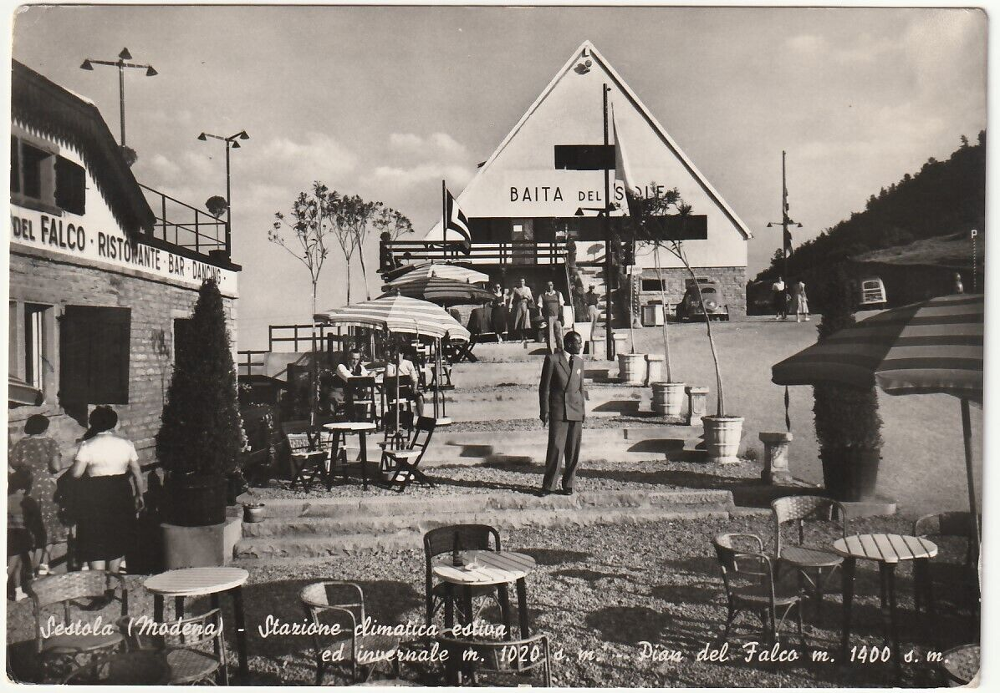
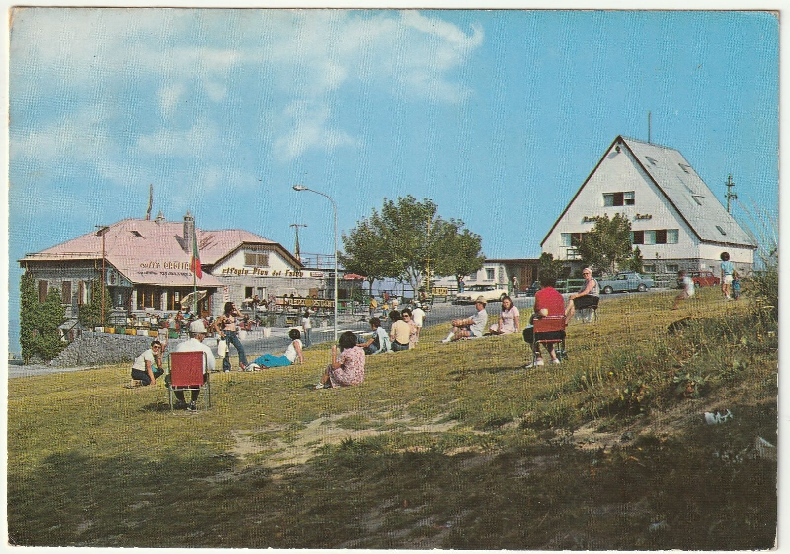

La Baita del Sole
Come già accennato nella sezione dedicata alla storia di Pian del Falco, le prime strutture ricettive edificate furono il Rifugio Pian del Falco (conosciuto anche come "Lo Chalet") e la Baita del Sole.

Osservando le varie foto d'epoca è divertente notare una certa evoluzione nel tempo che hanno avuto questi due fabbricati: in un primo tempo lo Chalet si presenta come un unico fabbricato, inizialmente senza scritte e poi successivamente con la comparsa della scritta "Rifugio Pian del Falco" sul fronte del fabbricato. Poi venne costruito il fabbricato della Baita del Sole e su entrambi si possono osservare due scritte di colore rosso, una sulla Baita del Sole e l'altra sullo Chalet che riporta la dicitura "Rifugio Pian del Falco - RISTORANTE - BAR - DANCING".

L'ultimo aspetto, quello che si trova più raramente nelle cartoline è stato probabilmente l'ultimo prima della demolizione, vede i due edifici identificati da insegne in rilievo.
Sia lo Chalet che la Baita del Sole sono stati abbattuti per fare spazio a due nuovi fabbricati ad uso residenziale.
Il rifugio Calvanella
Work in progress...
L'albergo ristorante Due Scoiattoli
Work in progress...